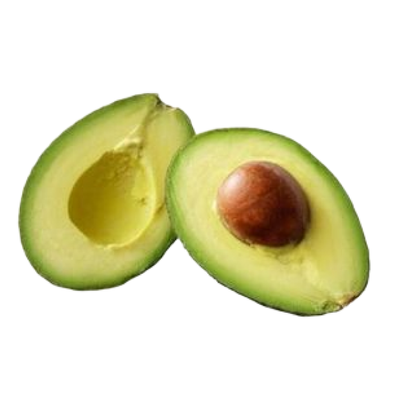
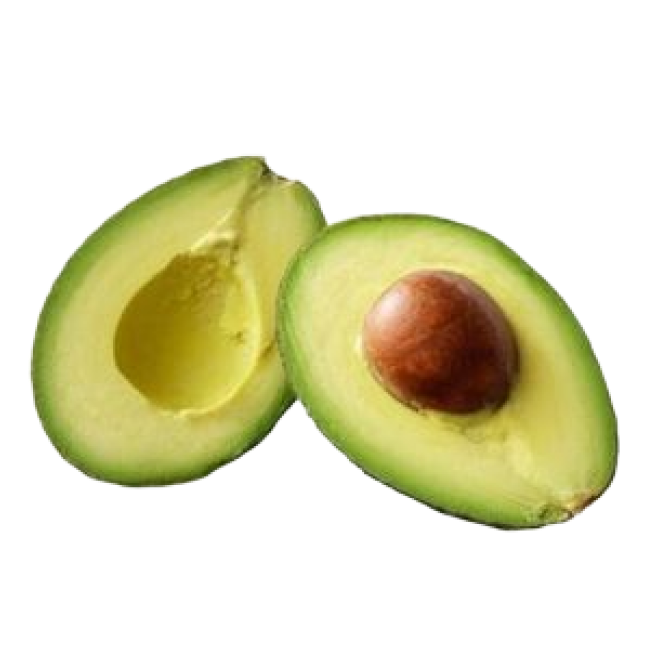
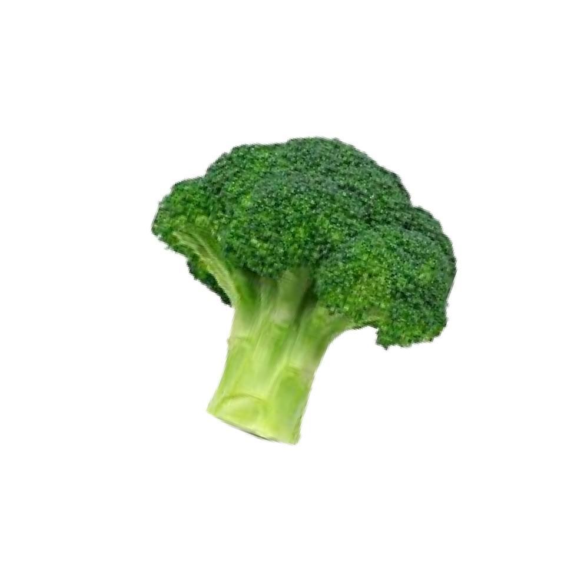
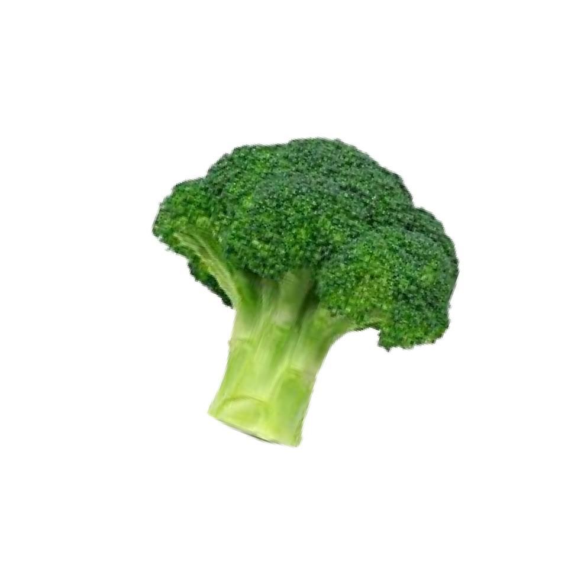
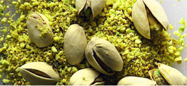
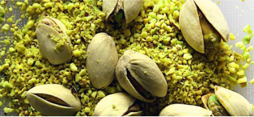
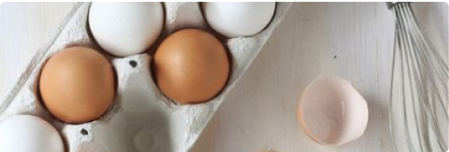
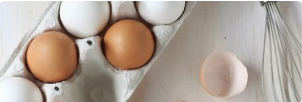
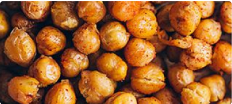
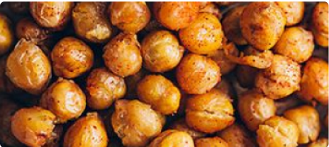

Узнайте больше
о здоровом образе жизни современной молодежи


 
  
Главным веянием не только десятилетия, но и последних 20 лет был и остается существенный рост вегетарианцев и веганов в мире.
На данный момент число вегетарианцев в мире приближается к полутора миллиардам, а список стран, где 10 и более процентов населения не едят мясо, прирастает практически ежегодно. Если раньше огромным числом вегетарианцев и веганов в обществе могла похвастать только Индия с ее серьезными религиозными канонами, то сейчас к ней присоединились страны Западной Европы, Тайланд и Израиль, где практически каждый десятый — вегетарианец или веган.
В России еще 15 лет назад это было исключительно субкультурным или религиозным явлением, но сейчас многие представители миллениалов исключают животную пищу из своего рациона, что уже сказывается на экономике.


Веганский рацион
Главным веянием не только десятилетия, но и последних 20 лет был и остается существенный рост вегетарианцев и веганов в мире.

Веганский рацион

Низкоуглеводная пища

Кето еда

Низкоуглеводная пища

Сбалансированная пища

Сбалансированная пища
Кетогенная диета — план питания с высоким содержанием жиров и практически без углеводов, чтобы организм начал использовать жиры в качестве энергии. Это состояние организма также называют кетозом.
Кетодиета при поддержке звезд приобрела популярность в последние пару лет, но недавно появился ряд исследований, которые опровергают безопасность кетодиеты. Отказ от углеводов может привести к расстройствам и дефициту разных веществ.
Низкоуглевод-
ная пища
Кето еда
Низкоуглевод-
ная пища
Сбалансиро-
ванная пища
Сбалансиро-
ванная пища
Кетогенная диета — план питания с высоким содержанием жиров и практически без углеводов, чтобы организм начал использовать жиры в качестве энергии. Это состояние организма также называют кетозом.
Кетодиета при поддержке звезд приобрела популярность в последние пару лет, но недавно появился ряд исследований, которые опровергают безопасность кетодиеты. Отказ от углеводов может привести к расстройствам и дефициту разных веществ.
Ягоды годжи, семена чиа, спирулину и киноа еще 5-10 лет назад в России не знали совсем, но сейчас это очень популярно.

Суперфудами принято называть продукты, в которых сосредоточено максимальное количество полезных веществ на единицу массы. Проще говоря, если горсть семян, ростков или несколько ягод дают нам столько же антиоксидантов, сколько придется собирать из других продуктов целую неделю, то это и есть суперфуд. Тренд пришел в Россию из других стран, где сыроеды и веганы активно искали источники большого количества питательных веществ. Благодаря грамотному маркетингу и популяризатору суперфудов Дэвиду Вульфу сейчас практически каждый второй житель мегаполиса употребляет эти продукты.


Ягоды годжи, семена чиа, спирулину и киноа еще 5-10 лет назад в России не знали совсем, но сейчас это очень популярно.
Суперфудами принято называть продукты, в которых сосредоточено максимальное количество полезных веществ на единицу массы. Проще говоря, если горсть семян, ростков или несколько ягод дают нам столько же антиоксидантов, сколько придется собирать из других продуктов целую неделю, то это и есть суперфуд. Тренд пришел в Россию из других стран, где сыроеды и веганы активно искали источники большого количества питательных веществ. Благодаря грамотному маркетингу и популяризатору суперфудов Дэвиду Вульфу сейчас практически каждый второй житель мегаполиса употребляет эти продукты.

 

Ягоды годжи, семена чиа, спирулину и киноа еще 5-10 лет назад в России не знали совсем, но сейчас это очень популярно.
Суперфудами принято называть продукты, в которых сосредоточено максимальное количество полезных веществ на единицу массы. Проще говоря, если горсть семян, ростков или несколько ягод дают нам столько же антиоксидантов, сколько придется собирать из других продуктов целую неделю, то это и есть суперфуд. Тренд пришел в Россию из других стран, где сыроеды и веганы активно искали источники большого количества питательных веществ. Благодаря грамотному маркетингу и популяризатору суперфудов Дэвиду Вульфу сейчас практически каждый второй житель мегаполиса употребляет эти продукты.
 


 

Бокс
Бокс — это один из наиболее сильных и мужественных видов спорта, признан не только как эффективнейшее средство в разностороннем физическом развитии, но и как средство воспитания морали и силы духа. Бокс развивался еще с древних времен. Зумба является жиросжигающей тренировкой всех групп мышц низкой и средней интенсивности, которая включает простую для повторения хореографию.
Сапсерфинг — скоростной вид сёрфинга, при котором райдер стоит на Сапе и гребёт веслом, передвигаясь по водной поверхности с максимально возможной скоростью. При катании на роликах задействованы практически все из 640 мышц нашего тела. Основная нагрузка, конечно, приходится на ноги, но, кроме того, работают также мышцы пресса, спины, груди, верхнего плечевого пояса, рук. Причём, в отличие от бега и катания на велосипеде, на роликах гораздо активнее работает внутренняя группа мышц бедра, поэтому подтянутые и худые ноги — удел всех роллеров.
Зумба
Сапсерфинг
Ролики

Бокс
Зумба
Сапсерфинг

Ролики


Биохакинг учит человека проводить апгрейд собственного организма, направляя его в сторону увеличения производительности и продления срока жизни.

Забота о себе
Улучшение себя всегда беспокоило человечество. Так появились очки, инвалидные коляски и многое другое. Однако мы живем в эру информационных технологий, а потребить и переварить больше информации иногда бывает непросто. По сути вся ваша жизнедеятельность направлена на продолжение срока жизни и увеличение продуктивности, как и в спорте, где вся остальная жизнь приносится в жертву его величеству результату. В столице существует даже специальный центр, где вам помогут сдать всевозможные анализы и назначат терапию, которая с годами превратит вас в сверхчеловека. Но это неточно.
Биохакинг — это не курс оздоровления, а стиль жизни. Определенный вид питания, физические нагрузки, витамины и добавки и, конечно регулярное посещение врачей. Биохакинг — это хорошее самочувствие, энергия и длинная счастливая жизнь.